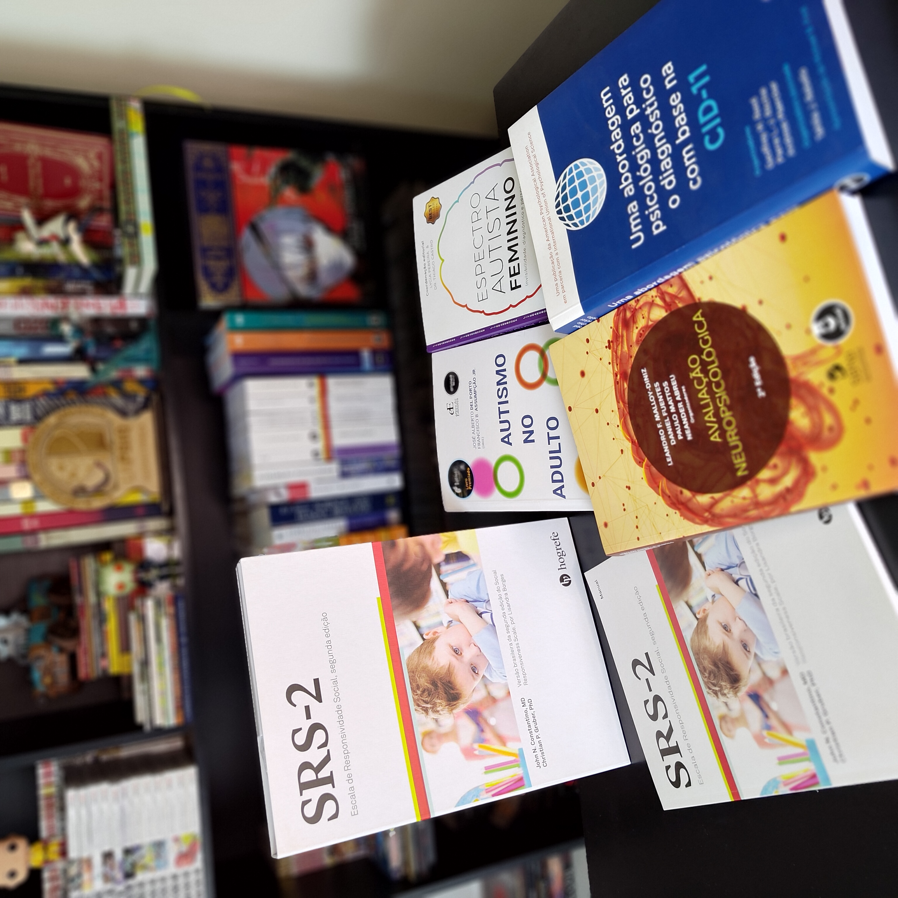

Serviços
Atendimento personalizado para suas necessidades
Atendimento Online
Terapia de qualidade no conforto da sua casa, com toda a privacidade e eficácia do atendimento presencial.
O atendimento online oferece:
- Flexibilidade de horários
- Economia de tempo com deslocamento
- Conforto e segurança do seu lar
- Mesma qualidade do atendimento presencial
- Ideal para quem mora longe ou tem rotina agitada
- Plataforma segura e confidencial
Como funciona: As sessões são realizadas por videochamada em plataforma segura. Você só precisa de um local tranquilo, conexão à internet e um dispositivo com câmera.
O atendimento online é regulamentado pelo Conselho Federal de Psicologia e tem a mesma validade do presencial.


Avaliação Psicológica para Procedimentos Pré-Cirúrgicos
Avaliação psicológica realizada de forma ética e técnica para procedimentos como cirurgia bariátrica, laqueadura e vasectomia. Atendimento presencial e online.
O processo avaliativo inclui:
- Entrevista clínica detalhada
- Investigação da história emocional e comportamental
- Avaliação das expectativas em relação ao procedimento
- Identificação de possíveis fatores psicológicos de risco
- Análise da capacidade de tomada de decisão consciente
- Aplicação de instrumentos psicológicos quando necessário
- Emissão de atestado ou laudo psicológico conforme exigência médica
Para quem é indicado: Pessoas que necessitam de avaliação psicológica como parte do preparo para cirurgia bariátrica, laqueadura ou vasectomia, conforme solicitação da equipe médica ou protocolo hospitalar.
Avaliação Neuropsicológica (TEA – 15+)
Um processo estruturado e criterioso para compreender o funcionamento cognitivo, emocional e comportamental em adolescentes (15+) e adultos, com foco na investigação de Transtorno do Espectro Autista (TEA). Atendimento presencial e online.
Na avaliação neuropsicológica, trabalhamos para:
- Investigar critérios diagnósticos relacionados ao TEA em adolescentes e adultos
- Avaliar funções cognitivas como atenção, memória, linguagem e funções executivas.
- Analisar habilidades sociais, comunicação e padrões comportamentais
- Identificar possíveis comorbidades (ansiedade, depressão, TDAH, entre outras)
- Diferenciar TEA de outras condições clínicas
- Fornecer devolutiva detalhada e laudo técnico fundamentado
- Oferecer orientações personalizadas para intervenções e acompanhamento
Para quem é indicado: Adolescentes (a partir de 15 anos) e adultos que apresentam dificuldades sociais persistentes, rigidez comportamental, hipersensibilidades, histórico de dificuldades desde a infância ou que buscam investigação diagnóstica formal de TEA.

Como funciona o processo terapêutico?
Entre em contato
Envie uma mensagem pelo formulário ou WhatsApp para agendar sua primeira consulta.
Primeira sessão
Conversaremos sobre suas necessidades, expectativas e como podemos trabalhar juntos.
Definição de objetivos
Juntos, estabeleceremos metas claras para o seu processo terapêutico.
Acompanhamento contínuo
Sessões regulares onde trabalharemos suas questões e acompanharemos sua evolução.
Perguntas Frequentes
Cada sessão tem duração de 50 minutos, seguindo o padrão estabelecido pelo Conselho Federal de Psicologia.
O ideal é uma sessão por semana, mas a frequência pode ser ajustada de acordo com suas necessidades e disponibilidade.
Não há um tempo fixo. Cada pessoa tem seu próprio ritmo. Algumas questões podem ser trabalhadas em poucos meses, outras requerem mais tempo. O importante é respeitar seu processo.
Sim! A terapia online tem a mesma eficácia que a presencial. O mais importante é o vínculo terapêutico e seu comprometimento com o processo.
Entre em contato para saber sobre valores e formas de pagamento.